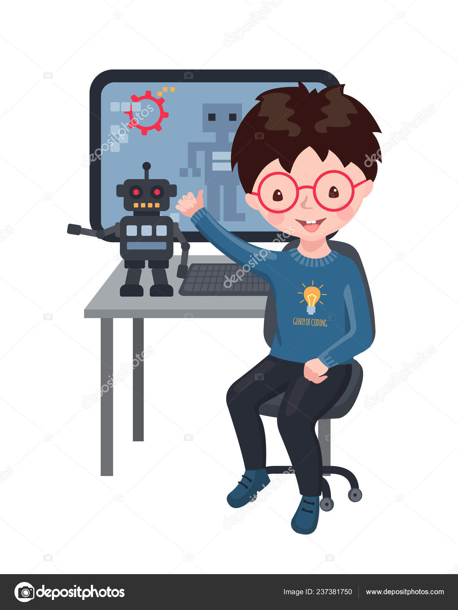

Главная | О нашей компании | Соцсети | Файлы для скачивания | Игры
Всем привет!!! Вы на главной странице сайта D-cloud. Этот сайт строит очень маленький программист, который недавно начал изучать основные пазы программирования. Этого программиста зовут Штанишкин Василий. Сейчас ему 10 лет. Но кроме программирования он также любит хорошенько покушать. Но, а самые его любимые кушанья это:
Весь этот перечисленный список является лишь малой частью остальных блюд нашего маленького программиста. Но, а есле бы мы сюда вписали всё без исключения, я думаю, у нас бы даже не хватило и всей страницы для такой вкусной процедуры.
Пожалуй, о еде нашего Василия хватит разговаривать, а то мне почему-то сильно есть захотелось. И следующим номером нашей программы будет его хобби. Из всех хобби ему больше по душе:
На мой взгляд, это очень маленьких список для нашего с вами программистика. И как тогда у него появился такой сайт? Всё очень просто, когда наш Штанишкин пробуждается после длинного и сладкого сна, он идёт кушать, а кушает он примерно 4 часа. После еды Васёк начинает отдыхать, то есть писать свой сайт D-cloud примерно 20 минут. Затем в 16:20 наш обжора опять начинает свою длинную трапезу, которая на этот раз протекает 5 часов. Затем после длинного и нелёгкого дня маленький программистик ложится в свою сладкую постельку и сразу же засыпает.
После таких интересных описаний автора компании D-cloud, очень сильно захотелось посмотреть на него самого. Но, к сожалению, этот обжора не выкладывает свои фотографии. Поэтому прочитав этот довольно смешной рассказ про создателя компании D-cloud, вольно невольно хочется посмотреть на его сайт.